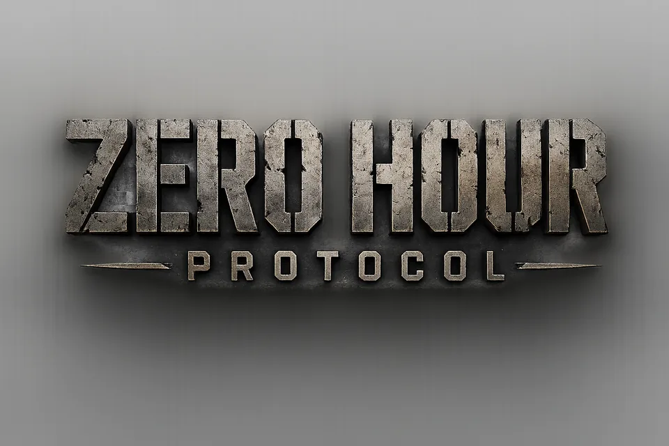

IN PROGRESS
Zero Hour:
Protocol
A 3D real-time strategy experience where resource management, base building, asymmetric factions, and tactical combat decide every battle.
Command every decision.
Build your forces, control the battlefield, and adapt to each enemy in a feature-rich RTS vertical slice.
- Three asymmetric factions and AI opponents
- Base building, economy, tech trees, and defensive systems
- Skirmish maps, challenges, and tactical combat